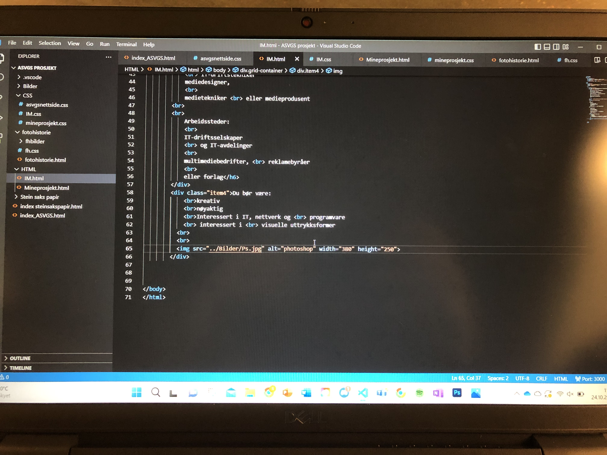
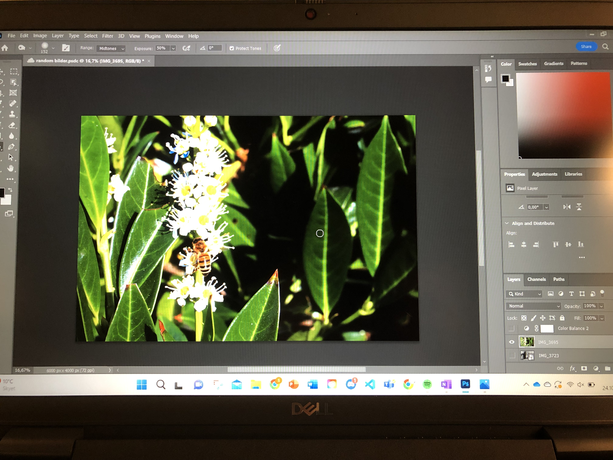

Informasjonsteknologi og medieproduksjon
Kva me lærar:
idéutvikling og kreativ problemløsning
om brukerstøtte, nettverk,
IT-sikkerhet og programmering
innholdsformidling
og historiefortelling
foto, film og grafisk design
kommunikasjon og markedsføring

Info om linja:
Du kan bli:
IT-utvikler eller
IT-driftstekniker
mediedesigner,
medietekniker
eller medieprodusent
Arbeidssteder:
IT-driftsselskaper
og IT-avdelinger
multimediebedrifter,
reklamebyråer
eller forlag
Du bør være:
kreativ
nøyaktig
Interessert i IT, nettverk og
programvare
interessert i
visuelle uttrykksformer
